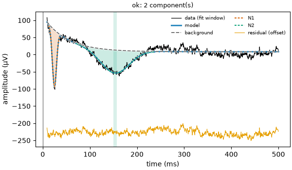
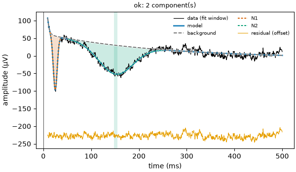

Note
Go to the end to download the full example code.
05: Background fitting¶
Choose the shape of the slow part of the curve, and see what it does to the bumps.
Introduction¶
The background is the slow part of the curve that is not a bump. After an electrical pulse, it is mostly the recording equipment coming back to rest: a jump that fades away. It can also hold a slow drift. It is not the baseline (the time before the stimulus) and not the brain’s resting activity.
The bumps are measured from the background: if the background is wrong, every amplitude is wrong too. This tutorial shows the shapes the background can take, and the one setting that most often needs a thought: how slowly it may fade.
# Import what we need
import numpy as np
from evoparam import fit_response, gen_response, plot_fit
from evoparam.shapes import list_backgrounds
The background shapes¶
background chooses the shape:
"none": no background;"constant": a flat line (one number: its level);"linear": a straight line that may slope (two numbers);"exponential": a level plus a jump that fades away,c0 + c1 × exp(−t / tau).tau(the time constant) is how fast it fades: aftertau, about a third of the jump is left. This is the default of"ccep";"double_exponential": a level plus two fading jumps, a fast one (tau1) and a slow one (tau2);"pspline"and"artifact_basis": more flexible shapes, for special cases.
print(list_backgrounds())
['artifact_basis', 'constant', 'double_exponential', 'exponential', 'linear', 'none', 'pspline']
A curve with a fast and a slow tail¶
We make the curve of the earlier tutorials (N1 at 25 ms, −150 µV; N2 at 150 ms, −80 µV)
on a background with two parts: a large jump that fades very fast (300 µV, tau =
5 ms) and a slow drift that fades in 150 ms (60 µV).
# N1, N2, the fast jump [height (µV), time constant (ms)] and the noise
times, signal = gen_response([[25, -150, 10], [150, -80, 80]], background=[300, 5], seed=3)
# Add the slow drift: 60 µV fading in 150 ms, starting at the stimulus
signal = signal + np.where(times > 0, 60 * np.exp(-times / 0.15), 0)
def show(fit):
"""Print the bumps (ms, µV), the time constants of the background (ms) and the BIC."""
for bump in fit.components:
print(f" {bump.label}: {bump.latency_ms:.0f} ms, {bump.amplitude:.0f} µV")
taus = {key: round(1000 * val) for key, val in fit.background.items() if key.startswith("tau")}
print(f" background {fit.background['name']}, time constants (ms): {taus}")
print(f" BIC = {fit.gof.bic:.1f}")
One fading jump, the preset¶
fit_one = fit_response(times, signal, preset="ccep", random_state=0)
show(fit_one)
fig = plot_fit(fit_one)

N1: 25 ms, -164 µV
N2: 153 ms, -67 µV
background exponential, time constants (ms): {'tau': 50}
BIC = 63.9
One exponential can not be fast and slow at the same time. Its time constant stops at
50 ms, the largest the "ccep" preset allows (more on this below). The slow drift is
not fully taken by the background, and part of it goes into the bumps: the N1 comes out
at −164 µV and the N2 at −67 µV, instead of −150 and −80.
Two fading jumps¶
"double_exponential" has a fast and a slow part. We also raise the largest time
constant allowed, background_tau_max, to 300 ms (0.3 s), so that the slow part can
follow a drift of 150 ms.
fit_two = fit_response(
times,
signal,
preset="ccep",
background="double_exponential",
background_tau_max=0.3,
random_state=0,
)
show(fit_two)
fig = plot_fit(fit_two)

N1: 25 ms, -153 µV
N2: 152 ms, -82 µV
background double_exponential, time constants (ms): {'tau1': 3, 'tau2': 240}
BIC = 42.6
The two parts are found: a fast one (3 ms) and a slow one (240 ms). They are not exactly the true 5 and 150 ms, because the two parts can trade a little with each other and with the N2. But the N1 (−153 µV) and the N2 (−82 µV) are now close to the truth, and the BIC is the lowest (43 against 64).
The fit also warns ill_conditioned: the slow part of the background and the broad N2
overlap in time, so the fit has trouble telling them apart, and their uncertainties are
larger. The warnings of a fit are in fit.warnings.
print(fit_two.warnings)
['ill_conditioned']
Why the time constant is limited¶
If the background may fade as slowly as it likes, it can take a real slow response for
itself: a broad N2 looks a lot like a slow fading jump. The "ccep" preset limits
tau to 50 ms (background_tau_max=0.05) for that reason: the equipment’s tail
after a pulse fades within a few ms to tens of ms, while the N2 lasts hundreds of ms.
Here is the same two-part background with the preset’s limit of 50 ms.
fit_limited = fit_response(
times, signal, preset="ccep", background="double_exponential", random_state=0
)
show(fit_limited)
N1: 25 ms, -159 µV
N2: 155 ms, -79 µV
delayed_b: 413 ms, -25 µV
background double_exponential, time constants (ms): {'tau1': 1, 'tau2': 50}
BIC = 49.3
The slow part stops at 50 ms and can not follow the 150 ms drift. What is left of the
drift is fitted as an extra bump going down at about 410 ms (delayed_b), which is
not in the brain.
So the limit is a choice between two risks: too low, a slow drift becomes bumps; too high, a slow response becomes background. Raise it only when you know the recording has a slow drift (look at the curve far after the response, where only the background is left), and write the value in your methods.
Conclusion¶
The background carries the slow part of the curve, and the bumps are measured from it.
"exponential" follows the fading tail after a pulse; "double_exponential" adds a
slower part. background_tau_max decides how slow the background may be: it protects
slow responses, but a real slow drift above it turns into bumps. Look at the figure and
at fit.warnings before trusting the amplitudes.
Total running time of the script: (0 minutes 1.268 seconds)